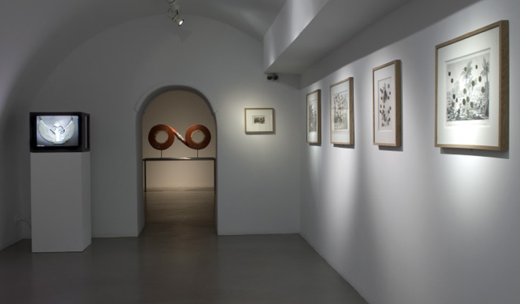

Coins from everywhere and all times are glued on the heads side on various engravings of which subject is Egyptian countryside. Just like a coin, War has two sides: heads and reverse. Egyptian campaign was a military failure though it is glorious in collective memories because objects brought back by Napoleon as war treasures became emblematic of both Napoleon influence and French culture. This combination of coins and historical documents on the history of France brings up the constitution of a war treasure and refers to France and the whole World’s taking of Egyptian past and how it led to the universal aspect of the cultural reference of Ancient Egypt as the origin of Art. Thus, those images emphasize the role of belief and mythology in all historical construction and make visible the real meaning of the willingness to file historical documents. Those files relating Napoleon’s doings are the subject of fascination and passion which reminds us of the rituals from primitive civilizations that made their ancestors’ memories come to life again.
